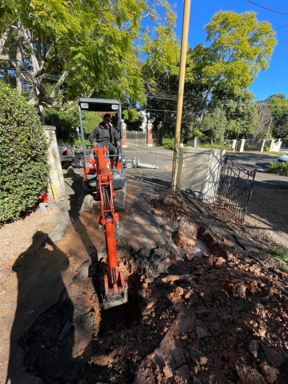

Have an emergency at your location? Need to get a professional out to your location? We work 24 hours a day and 7 days a week!

We're Open
We're Open

Have an emergency at your location? Need to get a professional out to your location? We work 24 hours a day and 7 days a week!
Our 24 hour Sydney plumbers specialise in all gas and
plumbing emergencies Sydney. Our teams experience and
expertise, along with our fully stocked vehicles, means that we can fix your
Sydney plumbing problem on the spot. Whatever your
Sydney plumbing emergency Hydrolink Plumbing & Gas guarantee our attention and
service 24 hours a day, seven days a week across the Sydney metro area.
Need to get someone out to your property as soon as possible? Is something in your home flickering, shorting out or behaving strangely? Dont ever attempt to do your own
plumbing work! Hire the professionals plumbers in Sydney to get the job done. Never
perform your own Sydney plumbing repairs without necessary experience in the field!
No one ever anticipates a plumbing emergency Sydney. They can strike at any time of
day, with no warning at all. Thats why Hydrolink Plumbing & Gas offer a prompt and reliable
24/7 emergency Sydney plumbing Response service, Ready to solve your plumbing
emergency in no time. Hydrolink Plumbing cover all aspects of residential and
commercial plumbing Sydney. From installation and repairs, To renovations and
blockages.
Dont have an emergency at your location but need immediate service? No problem. Well send someone out to your location as soon as possible to get
the job done. Whether you need repairs or inspections for your home or business, well get it sorted as quickly as possible, coming out to your business the same day.
Whether you need a plumber after hours or looking for a Sydney emergency plumber,
Hydrolink Plumbing Sydney is the right choice to get your
Sydney plumbing fixed in no time. For
urgent Sydney plumbing needs, we have certified and
professional Sydney plumbers near you who can be at your doorstep as quickly as
possible.
Hydrolink Plumbing is a 24-hour emergency plumbing Sydney can rely on. We know
Sydney plumbing emergencies cant wait. They can happen at any time of
day and night, which is why we are available 24/7 for your requests. When you call our operations centre, youll be able to speak with an expert. They will alert our team of
licenced Sydney plumbers and send one to your home. Call Hydrolink Plumbing for a
24 hr plumber Sydney today, there is no call-out fee!
Tired of working with tradesmen that tack on fees at the last minute? We are too. Well never charge you for anything than what we originally set with our flat rate. You always know
what youre paying for from the moment we come out to your property.
Looking for an after hours plumber Sydney? All of our tradesmen have been carefully selected because they are the best at
what they do. Our emergency plumbing Sydney team have the skills and experience to handle
Sydney plumbing issues quickly to minimise potential damage.
Weve earned our title as the best after-hours plumber in Sydney with
years of hard work and dedicated work ethics. We understand that Sydney plumbing repair and installation requires expertise
and precise attention to detail. Look no further than your local Sydney plumbing experts at Hydrolink
Plumbing. We specialise in 24 hour general and emergency plumbing in Sydney and all suburbs.
Here at Hydrolink Plumbing Sydney we understand that
residential plumbing Sydney issues across Sydney dont always happen between usual working hours.
Our local Sydney plumbers also understand that these
Sydney plumbing issues cannot go without immediate attention. At Hydrolink Plumbing, we have a
Sydney plumber on call 24/7*.
This ensures whatever time the Sydney plumbing emergency strikes, Hydrolink can help! Call
Hydrolink Plumbing Sydney for all your
emergency Sydney plumbing needs. We are open 7 days a week including Saturdays and Sundays with
$0 Call Out Fee. We are proud of our high quality of workmanship and affordable pricing for
Sydney plumbing services.
We have local Sydney plumbers available now in all metropolitan areas of Sydney that are ready to assist you when you have
plumbing problems in Sydney. Fully qualified and
licensed Sydney plumbers that undergo regular training – our
local Sydney plumbers in Sydney are always up to date with the latest industry knowledge and products.
Hydrolink Plumbing is the name to trust when it comes to
plumbing in Sydney. Because we have a large team of qualified
local plumbers in Sydney and the surrounding regions we can provide a truly local service. Our plumbers
are available all year round. Thats 24 hour a day, seven days a week. No matter the time of day, were ready to take your call and get on the job within the
hour. Sydney plumbing emergencies arent going to wait for you to be
ready, so you shouldnt have to wait either!
When you have a plumbing emergency in Sydney, it is important that you find a qualified and reliable 24/7 Sydney emergency plumber. Whom can you trust, though? 24/7 Sydney Emergency Plumbing by Hydrolink Plumbing Service is the name to remember. We have a team of experienced and certified emergency plumbers in Sydney who can provide fast, reliable, and quality Sydney plumbing services 24 hours a day, 7 days a week.
Hydrolink Plumbing provides 24/7 emergency plumbing services in the Sydney area. If you find yourself needing a Sydney plumber after hours, Hydrolink can provide the assistance you need at any time of day or night. With Hydrolink Plumbing, Sydney residents can be sure that they are getting a qualified Sydney emergency plumber who is reliable and trustworthy. Our Sydney emergency plumbers specialize in emergency plumbing in Sydney and can diagnose and repair any Sydney plumbing emergency you may have. Whether it's a dripping tap, blocked drain, or burst pipe, we are on call to provide Sydney emergency plumbing services at any time of the day or night. Hydrolink Plumbing is committed to providing fast and reliable emergency plumbing services to the Sydney area, allowing you to get back to your normal routine without delays. So, if you are looking for an emergency plumber in Sydney, contact Hydrolink Plumbing today for fast and efficient emergency services.
Our experienced team of Sydney plumbers always uses the highest quality materials and equipment for all jobs, ensuring long-term results. Hydrolink Plumbing is an emergency plumbing company in Sydney that is available 24/7 to provide you with professional Sydney plumbing services. Our Sydney plumbers can be near you quickly and efficiently, so don’t hesitate to contact them if you require any emergency plumbing services.
However, 24/7 emergency Sydney plumbing services provided by Hydrolink Plumbing are not just limited to fixing the issue quickly but also offer a comprehensive warranty on their services. This allows you to be sure that your plumbing is in safe hands and gives you peace of mind knowing that your plumbing is fixed right. It is essential to find a reliable 24/7 emergency plumber in Sydney that can handle your plumbing emergency promptly and efficiently. When looking for the right plumber, make sure to do your research, check credentials and reviews, ask for quotes and recommendations and make sure that the service is available 24/7 when needed. With the right plumber handling your Sydney plumbing emergency, you can ensure that it will be handled quickly and properly so that you can get back to your day-to-day activities as soon as possible.
Contact Us Call : 0433 629 517Here at Hydrolink Plumbing, we service a wide range of clients across the Sydney area. All of our Optimised Plumbing Services employees are fully qualified and trained and continuously provide #1 customer service. We have created transparent pricing that suits you. We provide a plan of attack and expert advice on all of our jobs, every time. We go above and beyond to meet your needs, and listen carefully to your concerns and questions to ensure you get the service you deserve. From burst pipe assistance in Sydney to unmatched drain cleanings in Sydney, hot water services Sydney, bathroom plumbing Sydney and more, you can rely on our experienced, professional, and courteous plumbers every single time. Call Hydrolink Plumbing today on 0433 629 517.
 Call Hydrolink Plumbing
Call Hydrolink Plumbing